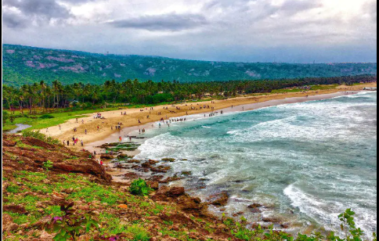

Andhra Pradesh
Major Projects
- Polavaram Irrigation Project
- Amaravati Capital Development
- AP Fibre Grid Project
Ongoing Developments
- Industrial corridor development
- IT sector expansion in Visakhapatnam
- Infrastructure upgrades in highways and ports
Importance of the State
Andhra Pradesh is known for its agricultural productivity, long coastline, major ports, and rich cultural heritage.
Tourist Attractions
Tirupati

|
Araku Valley

|
Visakhapatnam Beach

|
D.abhishek
24BKT0064